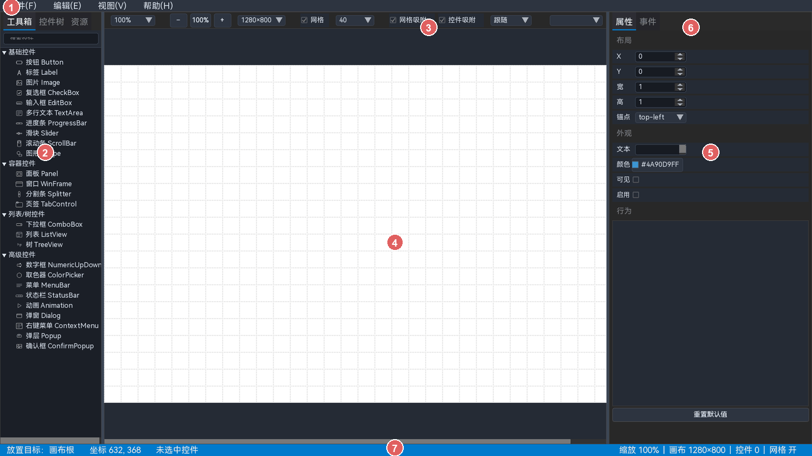

CornerstoneDesigner用户手册
基于 UICornerstone 的可视化 UI 设计器 —— 从控件摆放、属性编辑到主题与导出
C++17
UICornerstone
JSON 布局
27 种控件
组件 / 事件 / 主题
SDL3
1 使用手册
CornerstoneDesigner 是一个可视化 UI 设计器：在画布上放置控件、编辑属性、绑定事件、组织组件和主题，然后通过预览确认效果，最终导出 UICornerstone 可用的 JSON 布局或可编译的 C / C++ 工程。
本手册讲“怎么用”。功能为什么这样设计、内部模块如何实现，请阅读仓库 design/ 下的设计文档。

图 1-1 主界面：启动后的默认状态
1菜单栏：文件、编辑、视图、帮助
2工具箱：工具箱 / 控件树 / 资源三个页签
3画布工具栏：缩放、画布尺寸、网格、吸附、状态、对齐、预览
4画布：放置、选择、移动、缩放控件
5属性面板：编辑当前选中控件
6事件页签：绑定事件、查看已绑定事件
7状态栏：放置目标、坐标、选中状态、画布信息
1.1 推荐阅读路线
1.2 手册目录
1.3 文档约定
- 菜单路径写成“”；工具栏按钮和页签使用界面上的中文名称。
- Ctrl + 单击表示按住 Ctrl 再单击；Delete 表示单键。
- 提示（蓝色）是建议，注意（橙色）是可能影响结果的操作，限制（红色）表示当前版本不支持。
- 截图来自当前开发版；界面配色受“设计器自身 UI 主题”影响，功能位置不变。